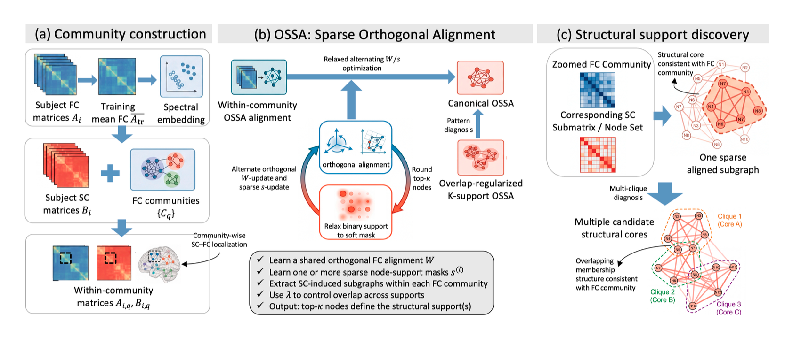
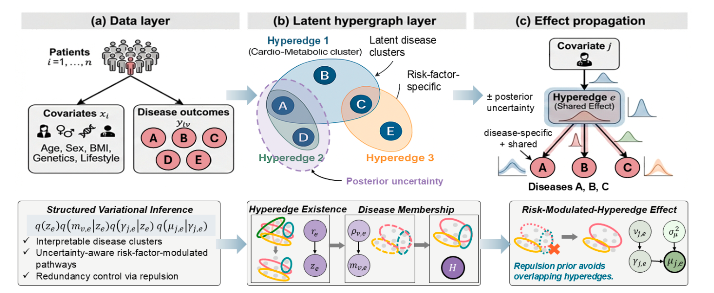
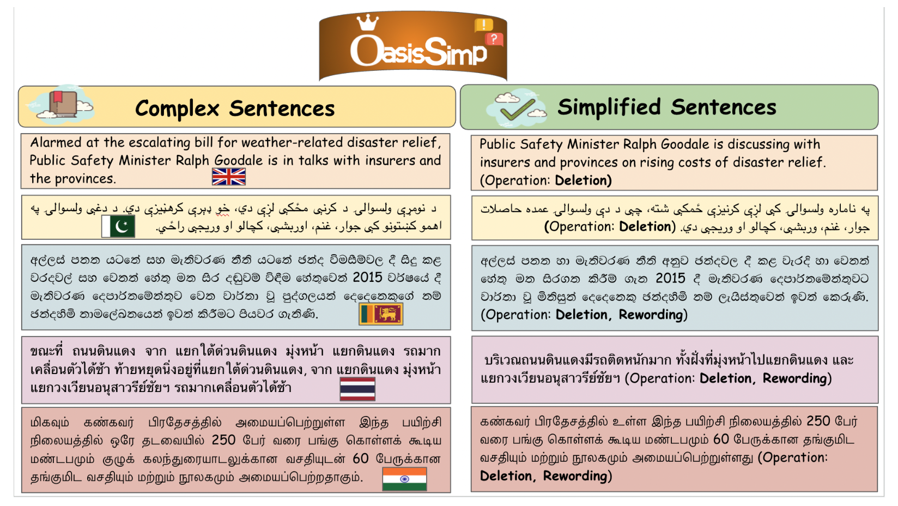
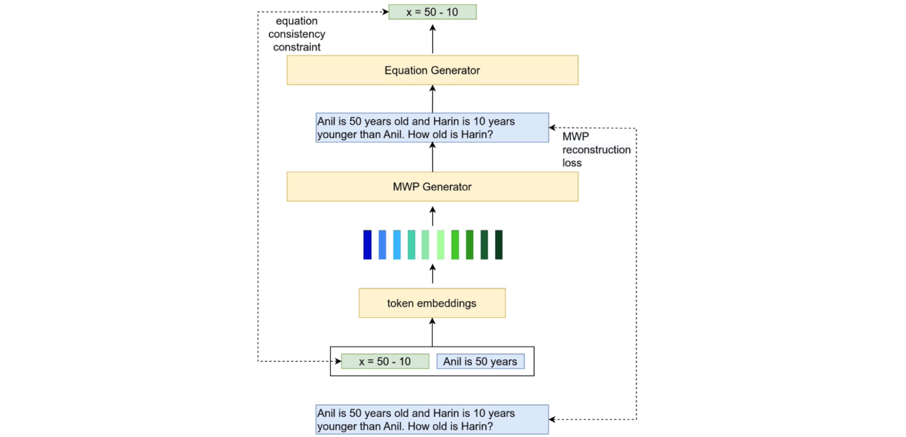
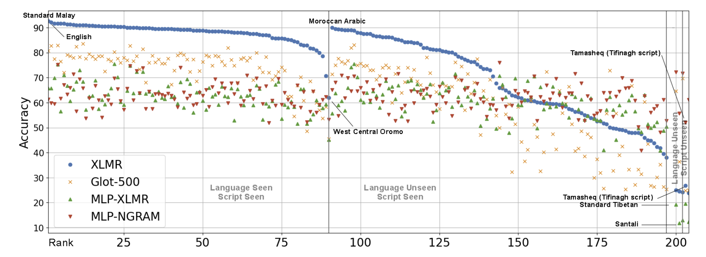
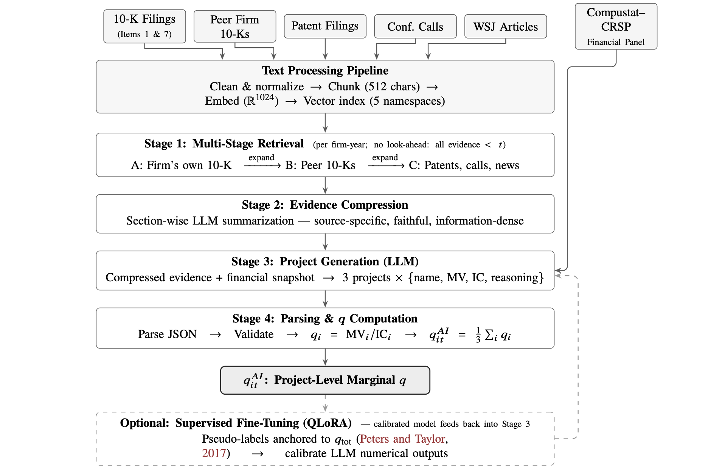

Research theme

A principled statistical framework that localizes cross-modal subnetworks in structure–function (SC–FC) coupling by jointly learning an orthogonal transformation and a sparse node-selection vector. It generalizes orthogonal Procrustes to an unknown induced-subgraph target, comes with consistency guarantees, and achieves state-of-the-art SC–FC alignment on the ABCD study, outperforming nine size-matched and deep-learning baselines.
Research theme

A Bayesian hypergraph framework for longitudinal EHR that jointly models multiple disease onsets and survival, discovers risk-factor-specific higher-order disease clusters, and scales to large biobank data through structured mean field variational inference.
Research theme

An open-source sentence-simplification dataset for five languages (English, Sinhala, Tamil, Thai, Pashto) with expert human simplifications, benchmarking eight open-weight multilingual LLMs in zero-/few-shot settings to expose low-resource simplification gaps.

The largest multi-way parallel math-word-problem corpus to date, spanning nine languages (six low-resource), benchmarking pretrained multilingual seq2seq models (mBART50, mT5, M2M-100, IndicBART) with a math-constraint generation module.

A topic-classification benchmark covering 205 languages and dialects (the first NLU evaluation set for many of them), built on the Flores-200 parallel corpus, with evaluation of multilingual PLMs under supervised, cross-lingual transfer, and LLM-prompting settings.
Research theme

An end-to-end LLM–RAG system over 2TB+ of heterogeneous financial text (SEC 10-K filings, USPTO patents, earnings-call transcripts, WSJ articles) with multi-stage semantic retrieval, strict no-look-ahead temporal constraints, and high-throughput batched serving — improving project-identification accuracy over a keyword-retrieval baseline.
Industry
Built a customer embedding platform using sequence models (Word2Vec, Transformer) and contrastive self-supervised learning (SimCLR, MoCo) for 50M+ users, and operationalized segmentation workflows (KMeans, GMM, DBSCAN, extended RFM) — personalized campaigns increased CTR by 14% and reduced churn by 9% in controlled experiments.
Developed a distributed, low-latency data engine and an InfluxDB connector for cross-data-center migration across 40+ databases — now deployed at top-5 banks in China serving 3M+ users — and implemented SQL predicate push-down that improved TPC-H 1000GB query speed by an average of 20%.